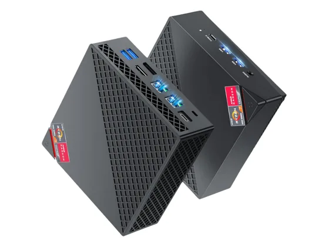
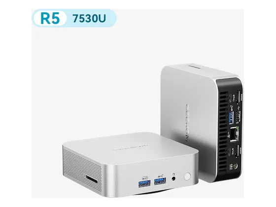
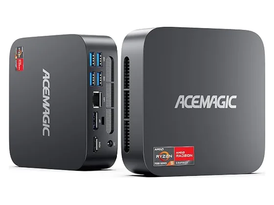

NiPoGi AM06 Pro : avis, tests et prix
Le verdict en une phrase. Un Ryzen à prix serré, avec double réseau et un accès facile aux composants. Boîtier plastique et SSD lent.
N° 6 sur 10 dans le top 10 mini-PC.

Pour qui ?
Vous voulez un Ryzen à prix serré, avec double réseau et un accès facile aux composants.
Vous attendez un boîtier en métal et un SSD rapide.
Le consensus de la presse
Sur 3 notes, 1 atteint ou dépasse 8/10. La plus haute : 8,0/10 (Maison et Domotique) ; la plus basse : 6,0/10 (Neozone). Dernier test relevé : octobre 2025.
Où l'acheter
La configuration peut différer d'un marchand à l'autre : vérifiez la fiche avant d'acheter. Liens d'affiliation : ils n'influencent ni les notes ni le classement.
Tous les tests recensés
Chaque ligne renvoie vers le test d'origine. Les notes sont converties sur 10 ; « test » signale un article sans note chiffrée. Notre méthode.
- Maison et Domotique8,0
- Notebookcheck6,3
- Neozone6,0
- Actu High-Techtest
- Basic Tutorialstest
Source du relevé : Synthèse CommentChoisir.
Les alternatives pour le même usage
Tout le top 10 → Geekom A8Très puissant pour sa taille et bien fini, avec une puce graphique Radeon 780M capable de jouer léger.
N° 5 · Le sobre
Geekom A8Très puissant pour sa taille et bien fini, avec une puce graphique Radeon 780M capable de jouer léger.
N° 5 · Le sobre

Geekom A5 ProCompact, sobre et suffisant pour la bureautique, avec deux emplacements SSD. La presse aimerait le voir passer sous les 500 €. N° 7 · L'évolutif à petit prix
Acemagic K1Beaucoup de cœurs pour le prix, deux emplacements de RAM et deux emplacements SSD. Le matériel accuse toutefois son âge.Questions fréquentes
Que pense la presse de l'ordinateur NiPoGi AM06 Pro ?
La note presse moyenne est de 6,8/10, calculée sur 3 notes (de 6,0 à 8,0/10). Un Ryzen à prix serré, avec double réseau et un accès facile aux composants. Boîtier plastique et SSD lent.
Quels sont les points faibles relevés par les tests ?
SSD lent ; RAM sur un seul module ; Boîtier plastique.
À qui s'adresse le modèle NiPoGi AM06 Pro ?
Vous voulez un Ryzen à prix serré, avec double réseau et un accès facile aux composants. À éviter si : vous attendez un boîtier en métal et un SSD rapide.
Où l'acheter, et à quel prix ?
Nous l'avons trouvé sur Amazon. Nous n'affichons pas les prix Amazon : ils changent trop souvent, le prix du jour se consulte sur la fiche Amazon. Les prix changent vite et la configuration peut différer d'un marchand à l'autre : seul le prix affiché par le marchand fait foi.